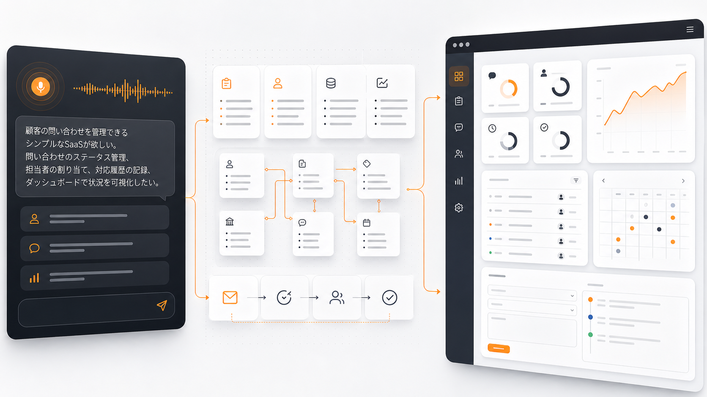
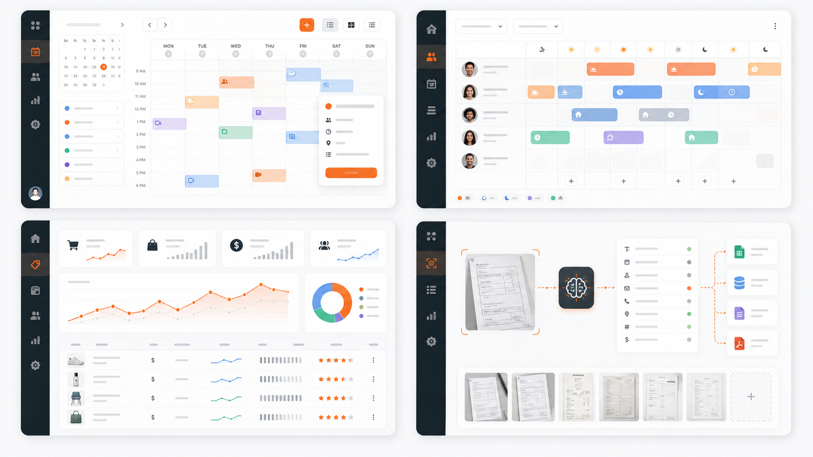
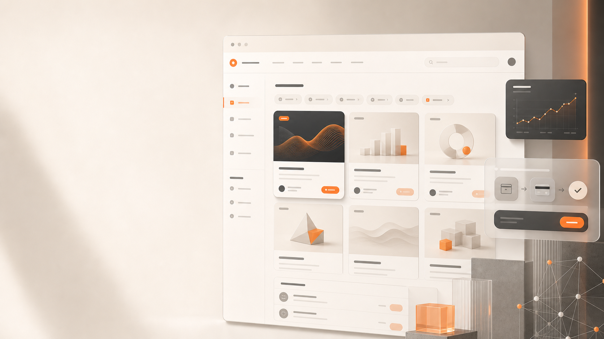

AI時代の稼ぎ方が、どこで変わっているのかを掴む。
澤田さんは非エンジニアから事業化まで経験している
自社アプリと受託の両輪を経験し、作る力を収益に変えるところまで実績化している。
澤
登壇者紹介：澤田
- 元大手経営コンサルティングファーム出身
- コーディング知識ゼロから独学でアプリ・サービスを開発
- 自社アプリは初月200万円、現在は月400万円を継続
- 受託でも13万円・50万円規模の案件を実績化

From consumer to builder
「消費者」から「事業者」へ。AIを便利に使うだけではなく、自分のサービスを作る側へ回るためのコラボセミナー。

自社アプリと受託の両輪を経験し、作る力を収益に変えるところまで実績化している。
知識を増やすだけではなく、AI時代の稼ぎ方と次の一歩を持ち帰る。
AI時代の稼ぎ方が、どこで変わっているのかを掴む。
非エンジニアでも作る側へ回れる可能性を知る。
終わったあとに何を学び、何を試すべきかを見える状態にする。
ライティング、画像生成、業務効率化は当たり前。重要なのは、AIを使って何を生み出すか。
便利に使うだけでは横並びになる。次の一手は、顧客の課題を解くサービスや業務アプリまで形にすること。
どちらも正しい。ただし、個人が勝ち筋を作るうえでは構造がかなり違う。
蓄積がある人は伸びる。ゼロを100倍しても、結果はゼロのまま。
経験・顧客理解・発信の型がある人は、AIで量と速度を上げられる。
何を言うべきか、誰に刺さるかがないと、投稿数だけ増えても差にならない。
アイディアを言葉で伝え、AIと対話しながら、数日で動くものを作れるようになっている。

大量にメッセージを出す側から、実際の解決策を生み出す側へ移る。
| 項目 | マーケティング | プロダクト |
|---|---|---|
| 焦点 | どう売るか | 何を作るか |
| AIの役割 | 拡声器 | 共同創業者 |
| 競争環境 | 飽和・レッドオーシャン | 未開拓・ブルーオーシャン |
| 収益の可能性 | 影響力に依存 | 段階的に積み上げ可能 |
情報を消費する人ではなく、AIで価値を作る人を増やしたい。
バイブコーディングとは、作りたいものを言葉にし、AIと対話しながら形にする新しい開発スタイル。
コードを一行も書かず、AIと自然言語で対話しながらプロダクトを開発する。

実務で使えるアプリや業務システムが、すでに生まれている。
業務上の具体的な課題が見えていれば、現場の手間や判断を減らすプロダクトにできる。

開発のハードルが下がっただけではなく、必要な能力の中心が変わっている。
個人が小さく作り、小さく売る選択肢が現実になる。
コードは一切書かない。
アイディアから数日でリリース。
実務で使える品質に近づける。
低コストなので受託でも利益率を高めやすい。
1人で作り、売り、改善する流れが現実に起きている。
翌日300万円売上。収益公開アプリのような短期立ち上げ事例。
マッチング相手の犯罪歴等を調べるアプリ。
「自分にもできそう」の直後に、現実を見る必要がある。
moonshot神話だけを見ると、再現性のない勝負になる。
ゼロから一足飛びに見える事例は、サバイバーシップ・バイアスを含む。
どの段階で止めても、すでに稼げている状態を作る。
AIがコードを書くほど、人間には何を作るべきかを判断する力が求められる。
最初から巨大なSaaSである必要はない。月10〜50万円規模の案件として成立し得る。
特殊な天才の話ではなく、正しい順番と環境があれば入口に立てる。
両方の実績を持ったうえで、いきなり自社アプリ一本ではなく、まず受託から始めることを推奨している。
200万円 -> 400万円
初月200万円から、現在は月400万円を継続。
13万円 / 50万円
1ヶ月で短期実績化した案件。
だからこそ、次に見るべきなのは、コミュニティの参加者にも再現が起きているかどうか。
作って終わりではなく、販売や納品まで進んでいることが重要。
才能ではなく、学習とレビューと実践の構造があるから、作る力が収益につながる。
単なるAIスクールではなく、作る人のためのコミュニティ。
学ぶ、動き出す、広げるまでを支え、その先の磨き込みやSaaS化も挑戦できる下地を整える。
よくあるAIスクールのように学習で終わらせず、実践と収益化まで分断しない。
受託や販売を目指すなら、品質保証は営業材料にもなる。
自分で取る力と、運営から降りてくる案件の両輪を作る。
マーケットプレイス機能で決済まで完結。Stripeの審査・開設なしに即販売開始できる。

消費者から創り手へ。この転換が、今日一番持ち帰ってほしいメッセージ。